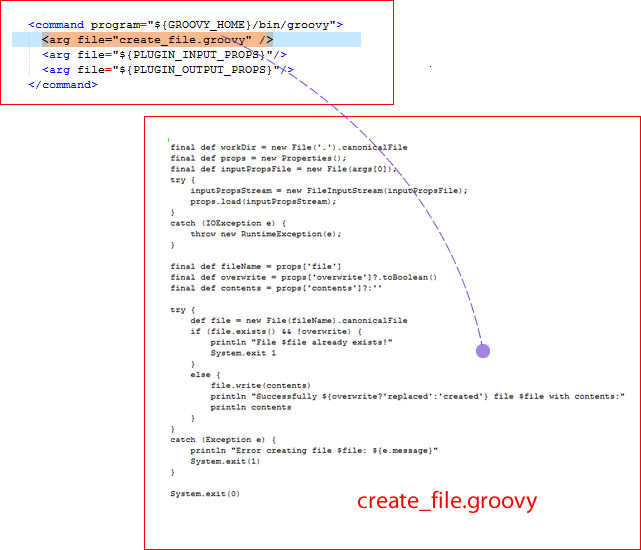

Step commands
The step's command element specifies the
scripting tool that runs the step and identifies the file that contains
the actual script.
The agent that runs the step downloads the plug-in and expects
to find the script among the downloaded files. The agent must also
have access to the scripting tool. Any other arguments that are required
by the script or tool can also be specified with the arg file attribute.
The arg file attributes should be defined in the
order compatible with the scripting tool.
The Create File command script is written in Groovy. Groovy is scripting language similar to Java™. The following illustration shows a command that runs an external Groovy file that is named create_file.groovy.

This command instructs the Groovy interpreter to run create_file.groovy (more about Groovy and the particulars of this file in the following section).
This line (which is part of every command):
<arg file="${PLUGIN_INPUT_PROPS}"/>sends a file that contains the properties that are required by
the step to the agent. The properties in the file are those properties
that are furnished at runtime and others that are defined earlier
that are required by the step. See Example plug-in. The ${PLUGIN_INPUT_PROPS} variable
resolves to the location of this properties file.
And this line (which is also part of every command):
<arg file="${PLUGIN_OUTPUT_PROPS}"/>refers to the file returned by the agent after finishing the step.
The properties in this file are available to later steps in the process.
The ${PLUGIN_OUTPUT_PROPS} variable resolves to
the location of this properties file.